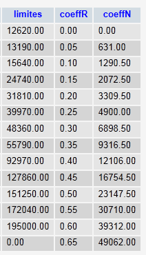

8. Exercício de cálculo de impostos com MySQL
Já escrevemos três versões deste exercício. A versão mais recente utilizava uma classe de cálculo de impostos. Esta classe recuperava os dados necessários para o cálculo a partir de um ficheiro de texto. Agora irá recuperá-los de uma base de dados. Para tal, escrevemos um código inicial que irá transferir os dados do ficheiro de texto para uma base de dados.
O ficheiro de texto impots.txt é o seguinte:
12620:13190:15640:24740:31810:39970:48360:55790:92970:127860:151250:172040:195000:0
0:0.05:0.1:0.15:0.2:0.25:0.3:0.35:0.4:0.45:0.5:0.55:0.6:0.65
0:631:1290.5:272.5:3309.5:4900:6898.5:9316.5:12106:16754.5:23147.5:30710:39312:49062
A base de dados a ser criada é a seguinte:
 |  |
A base de dados chama-se [dbimpots] e tem uma única tabela [impots]. É acedida pelo utilizador [root] sem palavra-passe.
8.1. Importar um ficheiro de texto para uma tabela MySQL (txt2mysql)
<?php
// transfers the text file containing the data needed to calculate taxes
// in a mysql table
// the data
$IMPOTS = "impots.txt";
$BASE = "dbimpots";
$TABLE = "impots";
$USER = "root";
$PWD = "";
$HOTE = "localhost";
// the data required to calculate the tax has been placed in the $IMPOTS file
// one line per table in the form
// val1:val2:val3,...
list($erreur, $limites, $coeffR, $coeffN) = getTables($IMPOTS);
// was there a mistake?
if ($erreur) {
print "$erreur\n";
exit;
}//if
// transfer these tables to a mysql table
$erreur = copyToMysql($limites, $coeffR, $coeffN, $HOTE, $USER, $PWD, $BASE, $TABLE);
if ($erreur)
print "$erreur\n";
else
print "Transfert opéré\n";
// end
exit;
// --------------------------------------------------------------------------
function copyToMysql($limites, $coeffR, $coeffN, $HOTE, $USER, $PWD, $BASE, $TABLE) {
// copy the 3 numerical tables $limites, $coeffR, $coeffN
// in table $TABLE of mysql database $BASE
// the mysql database is on machine $HOTE
// the user is identified by $USER and $PWD
// connection
list($erreur, $connexion) = connecte("mysql:host=$HOTE;dbname=$BASE", $USER, $PWD);
if ($erreur)
return "Erreur lors de la connexion à MySql sous l'identité ($HOTE,$USER,$PWD) : $erreur\n";
// table deletion
$requête = "drop table $TABLE";
exécuteRequête($connexion, $requête);
// table creation
$requête = "create table $TABLE (limites decimal(10,2), coeffR decimal(6,2), coeffN decimal(10,2))";
list($erreur, $res) = exécuteRequête($connexion, $requête);
if ($erreur)
return "$requête : erreur ($erreur)";
// filling
for ($i = 0; $i < count($limites); $i++) {
// insertion request
$requête = "insert into $TABLE (limites,coeffR,coeffN) values ($limites[$i],$coeffR[$i],$coeffN[$i])";
// query execution
list($erreur, $res) = exécuteRequête($connexion, $requête);
// return if error
if ($erreur)
return "$requête : erreur ($erreur)";
}//for
// it's over - log off
déconnecte($connexion);
// error-free return
return "";
}
// --------------------------------------------------------------------------
function getTables($IMPOTS) {
// $IMPOTS: name of the file containing data from tables $limites, $coeffR, $coeffN
...
// end
return array("", $limites, $coeffR, $coeffN);
}
// --------------------------------------------------------------------------
function cutNewLinechar($ligne) {
// delete the end-of-line mark from $ligne if it exists
...
// end
return($ligne);
}
// ---------------------------------------------------------------------------------
function connecte($dsn, $login, $pwd) {
// connects ($login,$pwd) to base $dsn
// returns the connection id and an error msg
...
}
//connect
// ---------------------------------------------------------------------------------
function déconnecte($connexion) {
// closes the connection identified by $connexion
...
}
// ---------------------------------------------------------------------------------
function exécuteRequête($connexion, $sql) {
// executes the $sql request on the $connexion connection
// returns an array of 2 elements ($erreur,$résultat)
...
}
Resultados no ecrã:
8.2. O programa de cálculo de impostos ( impots_04)
Esta versão utiliza uma classe Impôts que recupera os valores necessários para calcular o imposto a partir de uma base de dados. Aqui introduzimos um novo conceito: a instrução preparada. A execução de uma instrução SQL por um SGBD ocorre em duas fases:
- A consulta é preparada: o SGBD prepara um plano de execução otimizado para a consulta. O objetivo é executá-la da forma mais eficiente possível.
- A consulta é executada.
Se a mesma consulta for executada N vezes, as duas etapas anteriores são realizadas N vezes. No entanto, é possível preparar a consulta uma vez e executá-la N vezes. Para fazer isso, deve-se utilizar consultas preparadas. Se $query for a instrução SQL a ser executada e $connection for o objeto PDO que representa a ligação:
- $statement = $connection->prepare($query) prepara uma consulta e devolve a consulta «preparada»
- $statement->execute() executa a consulta preparada.
Se a consulta preparada for uma instrução SELECT, então
- $statement->fetchAll() devolve todas as linhas da tabela de resultados da consulta SELECT como uma matriz T, em que T[i,j] é o valor da coluna j na linha i da tabela
- $statement->fetch() devolve a linha atual da tabela como uma matriz T, em que T[j] é o valor da coluna j na linha
As instruções preparadas oferecem vantagens que vão além da simples melhoria da eficiência. Em particular, proporcionam maior segurança. Por isso, devem ser utilizadas de forma sistemática.
<?php
// test -----------------------------------------------------
// definition of constants
$DATA = "data.txt";
$RESULTATS = "resultats.txt";
$TABLE = "impots";
$BASE = "dbimpots";
$USER = "root";
$PWD = "";
$HOTE="localhost";
// the data required to calculate the tax has been placed in table mysqL $TABLE
// belonging to the $BASE database. The table has the following structure
// limits decimal(10,2), coeffR decimal(6,2), coeffN decimal(10,2)
// taxable person parameters (marital status, number of children, annual salary)
// were placed in the $DATA text file, one line for each taxpayer
// the results (marital status, number of children, annual salary, tax payable) are placed in the
// the $RESULTATS text file, with one result per line
// create a Tax object
$I = new Impôts($HOTE, $USER, $PWD, $BASE, $TABLE);
// was there a mistake?
$erreur=$I->getErreur();
if ($erreur) {
print "$I->erreur\n";
exit;
}//if
// create a utilities object
$u = new Utilitaires();
// opening taxpayer data files
$data = fopen($DATA, "r");
if (!$data) {
print "Impossible d'ouvrir en lecture le fichier des données [$DATA]\n";
exit;
}
// open results file
$résultats = fopen($RESULTATS, "w");
if (!$résultats) {
print "Impossible de créer le fichier des résultats [$RESULTATS]\n";
exit;
}
// the current line of the taxpayer data file is used
while ($ligne = fgets($data, 100)) {
// remove any end-of-line marker
$ligne = $u->cutNewLineChar($ligne);
// we retrieve the 3 fields married,children,salary which form $ligne
list($marié, $enfants, $salaire) = explode(",", $ligne);
// tax calculation
$impôt = $I->calculer($marié, $enfants, $salaire);
// enter the result
fputs($résultats, "$marié:$enfants:$salaire:$impôt\n");
// following data
}
// close files
fclose($data);
fclose($résultats);
// end
exit;
// ---------------------------------------------------------------------------------
// definition of a Tax class
class Impôts {
// attributes: the 3 data tables
private $limites;
private $coeffR;
private $coeffN;
private $erreur;
private $nbLimites;
// getter
public function getErreur(){
return $this->erreur;
}
// manufacturer
function __construct($HOTE, $USER, $PWD, $BASE, $TABLE) {
// initializes $limites, $coeffR, $coeffN attributes
// the data required to calculate the tax has been placed in the mysql table $TABLE
// belonging to the $BASE database. The table has the following structure
// limits decimal(10,2), coeffR decimal(6,2), coeffN decimal(10,2)
// connection to the mysql database on machine $HOTE is made as ($USER,$PWD)
// initializes the $erreur field with a possible error
// empty if no error
//
// connection to mysql database
$DSN = "mysql:host=$HOTE;dbname=$BASE";
list($erreur, $connexion) = connecte($DSN, $USER, $PWD);
if ($erreur) {
$this->erreur = "Erreur lors de la connexion à MySql sous l'identité ($HOTE,$USER,$PWD) : $erreur\n";
return;
}
// read table $TABLE
$requête = "select limites,coeffR,coeffN from $TABLE";
// executes the $requête request on the $connexion connection
try {
$statement = $connexion->prepare($requête);
$statement->execute();
// query result evaluation
while ($colonnes = $statement->fetch()) {
$this->limites[] = $colonnes[0];
$this->coeffR[] = $colonnes[1];
$this->coeffN[] = $colonnes[2];
}
// no error
$this->erreur = "";
// number of elements in the limit table
$this->nbLimites = count($this->limites);
} catch (PDOException $e) {
$this->erreur = $e->getMessage();
}
// disconnect
déconnecte($connexion);
}
// --------------------------------------------------------------------------
function calculer($marié, $enfants, $salaire) {
// $marié : yes, no
// $enfants : number of children
// $salaire: annual salary
// is the item in good condition?
if ($this->erreur)
return -1;
// number of shares
...
}
}
// ---------------------------------------------------------------------------------
// a class of utility functions
class Utilitaires {
function cutNewLinechar($ligne) {
// delete the end-of-line mark from $ligne if it exists
...
}
}
// ---------------------------------------------------------------------------------
function connecte($dsn, $login, $pwd) {
// connects ($login,$pwd) to base $dsn
// returns the connection id and an error msg
...
}
//connect
// ---------------------------------------------------------------------------------
function déconnecte($connexion) {
// closes the connection identified by $connexion
...
}
Resultados: os mesmos que nas versões anteriores.
Comentários
As novas funcionalidades encontram-se nas linhas 98–109:
- linha 99: a instrução SQL SELECT que recupera os dados necessários para calcular o imposto.
- Linha 102: Preparação da instrução SQL SELECT
- Linha 103: execução da instrução preparada
- Linhas 105–109: processamento da tabela de resultados da instrução SELECT linha a linha